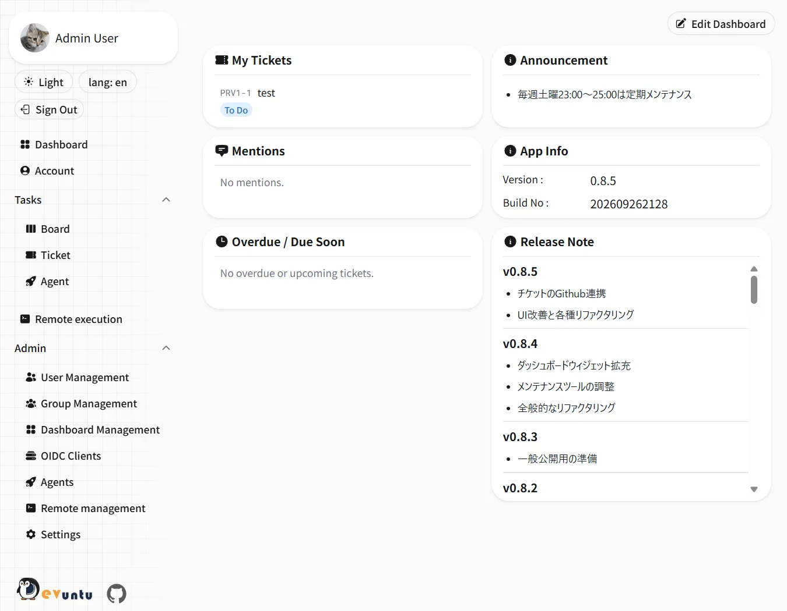
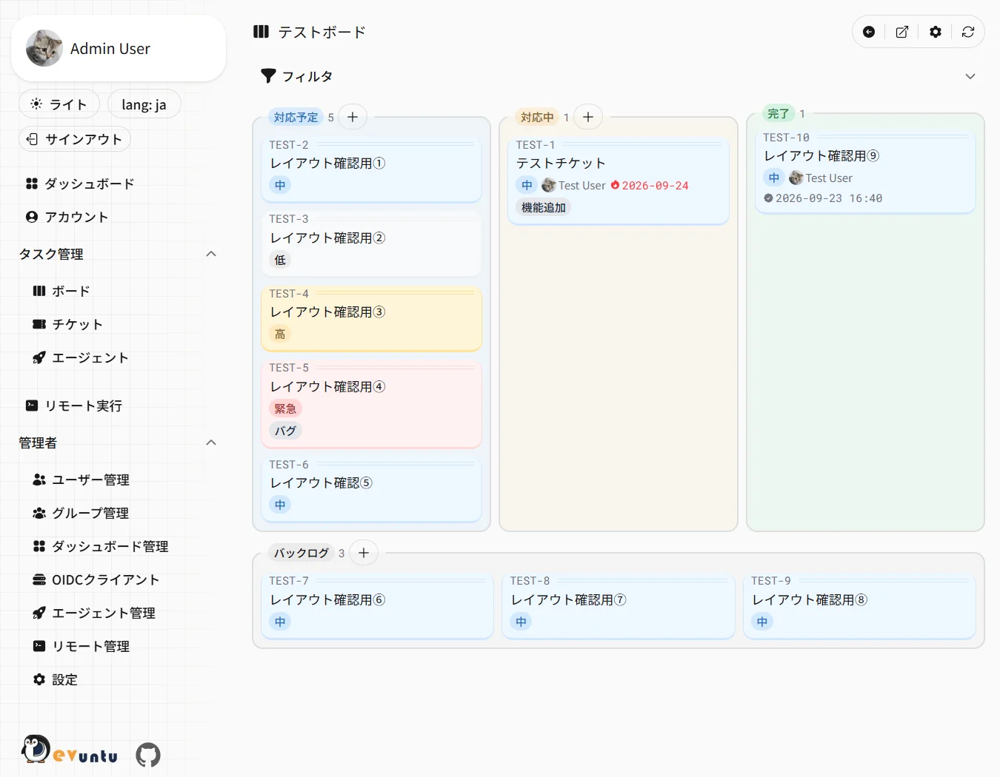

Features
-
Kanban boards and tickets
Boards, tags, assignees, priorities, due dates, comments and mentions. Parent/child and related tickets, acceptance criteria, per-board ticket templates and change history
-
Calendar
Google Calendar integration, and sharing your free/busy time through a public URL that needs no sign-in
-
Notifications
Email / Slack DM / web push notifications for mentions, assignee changes and AI agent run results. Team boards can also post to a Slack channel
-
MCP server
AI agents can work on tickets with your own permissions
-
AI agents
Register AI agents as assignees and let them process their tickets automatically (Claude / Codex)
-
Task splitting
Agents can split a large ticket into child tickets; once you approve the proposal, they work through the children in order
-
AI context
Per-board premises such as the target repository and conventions, delivered to MCP clients and agents
-
GitHub / GitLab
Link branches, pull requests and commits to tickets and see the PR status and CI results. Complete tickets on merge, and send them back to the agent on CI failures or review comments
-
Remote execution
Run predefined jobs on remote servers and follow the output in real time
-
Authentication
Passkeys and Google sign-in. Devuntu can also act as an OAuth provider
-
English / Japanese
Switch the UI language; notifications are sent in the language you choose
Screenshots


Get started
Devuntu is distributed as a Docker image and runs with Docker Compose. The only file you need is
compose.yaml.
- Place
compose.yamlon the host - Generate the configuration files with
docker compose run --rm tools setup-env - Start it with
docker compose up -d --wait(database migrations run on startup) - Open
/startand register the first administrator
See the quick start in the README for details. The application UI is available in English and Japanese.
The detailed documentation is available in Japanese only. Please use a translation tool or an AI assistant.